Embajadora de Bután con el equipo fundador del GNH Center Spain en el cierre del evento.
El 20 de marzo de 2019, coincidiendo con el Día Internacional de la Felicidad, se presentó en Madrid el único centro europeo enlazado oficialmente con el Centro GNH en Bután que preside Su Alteza Real, Ashi Kesang Choden Wangchuck , el GNH CENTER SPAIN.
El salón inglés de la Torre Picasso, lugar emblemático del corazón del distrito financiero de Madrid, se desbordó con la asistencia de casi 300 personas, entre políticos, empresarios, personalidades de la vida pública española y ciudadanos.
Monasterio Tiger’s Nest (Taktshang) en Bután.
El acto estuvo presidido por la Embajadora de Bután ante Europa y España, la Excma. Sra. Pema Choden , y presentado por el Cónsul General Honorario de Bután en España, Sr. Ian Triay , quien también es presidente y fundador del Centro, la conferencia posterior fue a cargo del Dr. Mario Alonso Puig, médico, cirujano y conferenciante .
El Presidente del Centro GNH, Ian Triay , diserto sobre Bután y sus características geopolíticas, naturaleza e historia, y sobre todo del origen del GNH y sus conceptos, el cómo influye en la política y la vida cotidiana de Bután, así como la importancia como activo intangible del país, un verdadero acercamiento a Bután a través de los ojos de quien mejor lo conoce en Europa.
Finalizó el evento con una conferencia del Dr. Mario Alonso Puig, Médico, sobre el tema del GNH y el Mindfulness , ponencia que impartió en calidad tanto de fundador del GNH como por ser el experto más importante de España en el tema y figura muy respetada en el circuito internacional en este campo, en el final de su charla además guió a los asistentes en una pequeña meditación que fue muy bien recibida.
GNH representa las necesidades holísticas de los seres humanos – bienestar físico, emocional, mental y espiritual. Busca promover una búsqueda interna consciente de la felicidad, así como las habilidades necesarias que deben armonizar con las circunstancias externas. Apoya la noción de que la felicidad perseguida y realizada dentro del contexto del bien mayor de la sociedad, ofrece la mejor posibilidad para la felicidad sostenida del individuo.
20 Marzo 2019, Impact Hub Torre Picasso (Madrid), ASOCIATE al GNH Center Spain
HAZTE Amig@ de GNH
El objetivo primordial de GNH es divulgar los principios y valores de la filosofía de la Felicidad del Reino de Bután a través de eventos, conferencias, contenidos y programas.
Como Amig@ de GNH podrás participar en todas las actividades y contenidos que organice la Asociación GNH Center Spain simplemente cumplimentando el formulario siguiente y haciendo el ingreso de la cuota anual de 120 € año o 10 € mes.
Acceso al formulario para hacerse Amig@ de GNH.
APUNTARSE

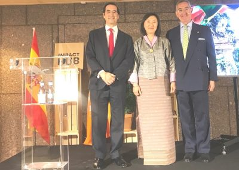
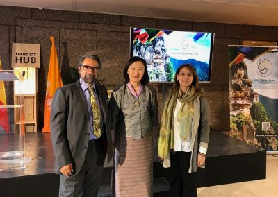
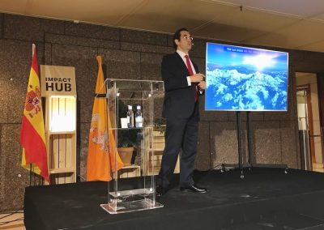
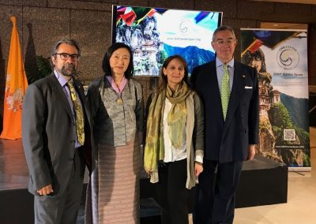
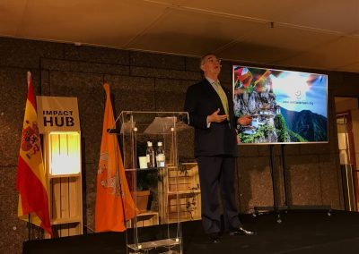
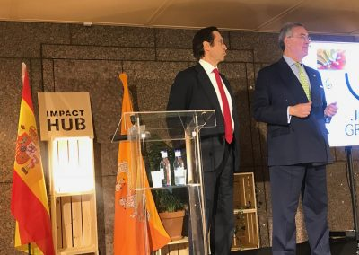
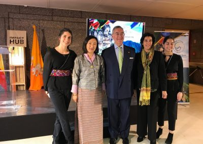
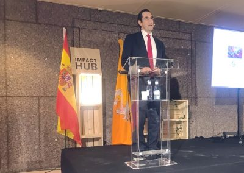
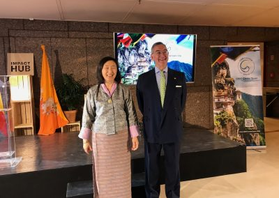
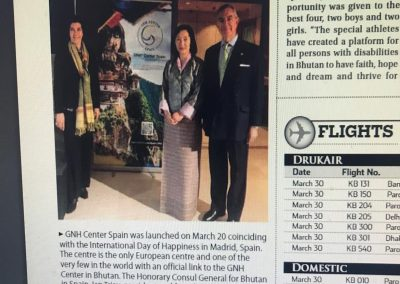
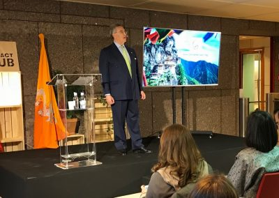
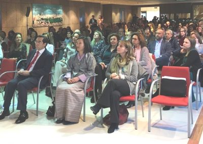
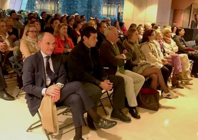
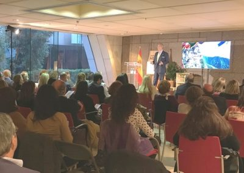
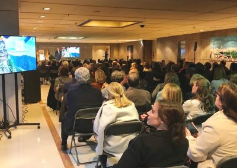
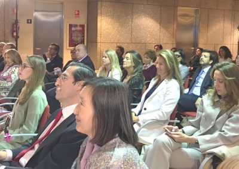
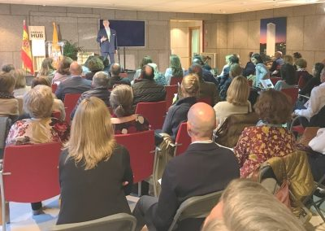
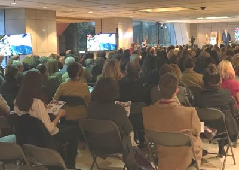
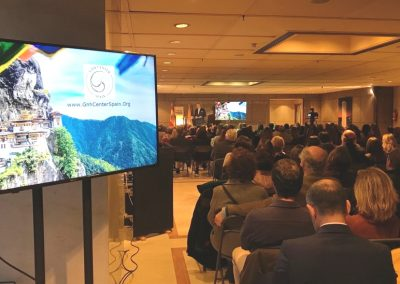